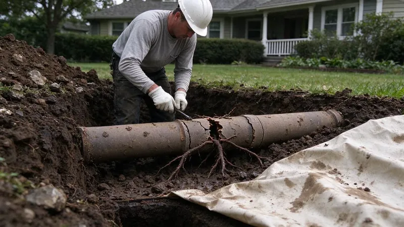

Plumbing Tips & Updates From KBN Plumbing
 15Oct, 2026
15Oct, 2026Slab Leak Warning Signs Every South Carolina Homeowner Should Know
A slab leak can run for months without anyone noticing. Here are the signs you can check on your own this week.
 6Oct, 2026
6Oct, 2026How to Protect Your Pipes Before the Next South Carolina Freeze
A split pipe in a wall can dump hundreds of gallons overnight. Here is how to keep a South Carolina home from freezing up.
 27Sep, 2026
27Sep, 2026Hard Water in South Carolina: When a Water Softener Pays for Itself
Most homeowners never add up what scale is costing them. Here is when a softener makes sense.
 18Sep, 2026
18Sep, 2026Tankless vs. Tank Water Heaters: What Works Best in South Carolina
Both kinds of water heater work. The right one for a South Carolina home depends on your gas line and how your family uses hot water.
 9Sep, 2026
9Sep, 2026Kitchen Sink Backups: Causes, Prevention and Quick Solutions
A backed-up kitchen sink stops dinner cold. Here is why it happens and what to try before you call.

31Aug, 2026Underground Pipe Damage: Common Causes and Modern Repair Solutions
A broken pipe underground does not always mean a trench across the yard. Here is how buried lines fail and how it gets fixed.
 22Aug, 2026
22Aug, 2026Hydro Jetting vs. Snaking: Which Drain Cleaning Method Do You Need?
A drain snake and a jetter solve different problems. Here is how to tell which one your line actually needs.
 13Aug, 2026
13Aug, 2026Why a Sewer Camera Inspection Belongs on Every South Carolina Home Inspection
A regular inspection does not look inside the sewer line. Here is why South Carolina buyers add a sewer scope before closing.
Have a plumbing question we did not cover?
Our team is happy to talk it through and give you a straight answer.